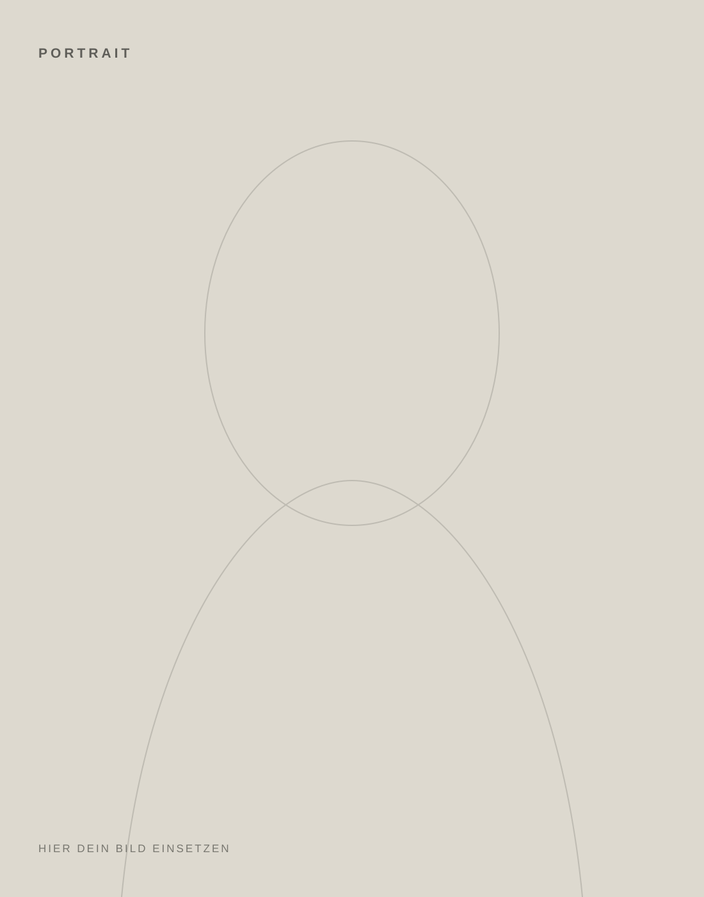

03 — Person
Ich bin
Sina.
CircuitCurios ist mein Ort für Material, Oberfläche und Dinge, die nicht aussehen sollen, als wären sie aus einer Form gefallen.
Ich arbeite direkt am Material und lasse Werkzeugspuren sichtbar. Mich interessiert nicht die makellose Fläche, sondern der Moment, in dem eine Oberfläche Charakter bekommt.
Daraus entstehen vor allem Schmuck und Objekte aus Aluminium sowie handbearbeitete Einzelstücke. Kleine Unterschiede gehören dazu.
Zum Shop →Werkzeugspuren sind Teil des Ergebnisses, nicht etwas, das versteckt werden muss.
Aluminium steht im Mittelpunkt: leicht, direkt, wandelbar und offen für Oberfläche.
Struktur wird von Hand erzeugt. Deshalb bleibt jedes Stück ein bisschen eigen.